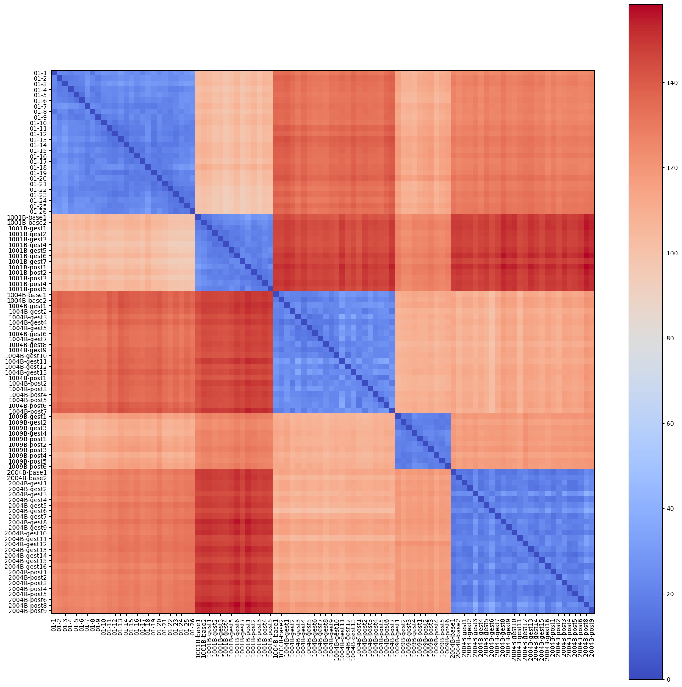
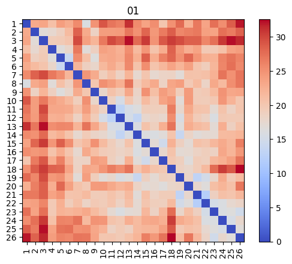
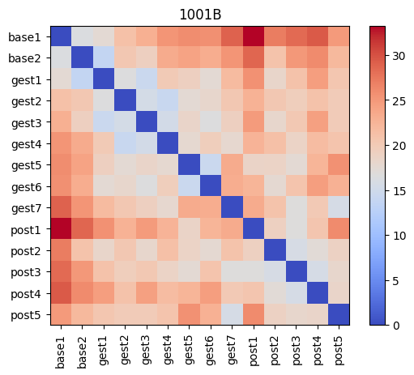
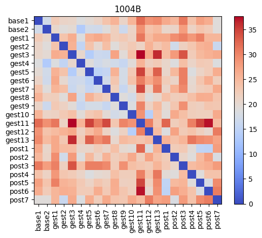
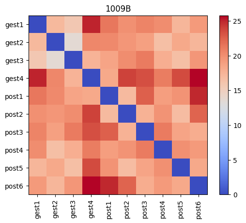
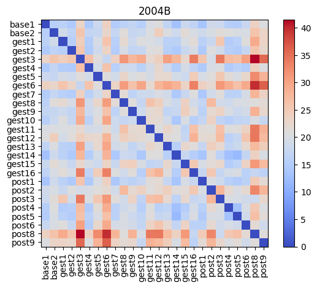
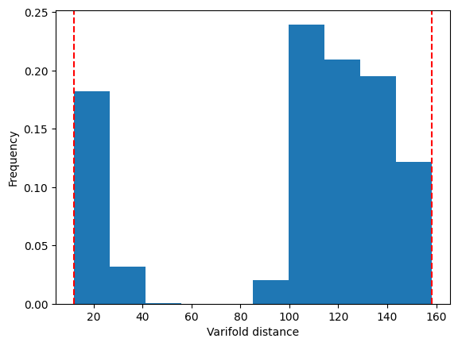

Varifold distances between subjects#
Before, we looked at how varifold distances change across derivatives.
Here, we check how varifold distances across subjects compare, for a fixed derivative.
[1]:
import numpy as np
import polpo.preprocessing.dict as ppdict
import polpo.utils as putils
from matplotlib import pyplot as plt
from polpo.mesh.surface import PvSurface
from polpo.mesh.varifold.tuning import SigmaFromLengths
from polpo.preprocessing.load.pregnancy.jacobs import (
MeshLoader,
get_subject_ids,
)
from polpo.preprocessing.mesh.registration import RigidAlignment
from sklearn.cluster import AgglomerativeClustering, SpectralClustering
[KeOps] Warning : CUDA was detected, but driver API could not be initialized. Switching to CPU only.
[2]:
STRUCT = "L_Hipp"
SUBJECT_IDS = get_subject_ids(sort=True)
SUBSAMPLE = None
[3]:
mesh_loader = (
MeshLoader(
subject_subset=SUBJECT_IDS,
struct_subset=[STRUCT],
derivative="enigma",
as_mesh=True,
)
+ ppdict.ExtractUniqueKey(nested=True)
+ ppdict.DictMap(ppdict.Subsample(SUBSAMPLE))
)
# subject, session
raw_meshes = mesh_loader()
[4]:
align_pipe = RigidAlignment(
target=ppdict.ExtractRandomKey()(putils.get_first(raw_meshes)),
known_correspondences=True,
)
meshes = (ppdict.DictMap(align_pipe + ppdict.DictMap(PvSurface)))(raw_meshes)
We select the varifold kernel using characteristic lengths.
[5]:
sigma_search = SigmaFromLengths(
ratio_charlen_mesh=2.0,
ratio_charlen=0.25,
)
[6]:
# one mesh per subject
mesh_per_subject = (
ppdict.DictMap(ppdict.ExtractRandomKey()) + ppdict.DictToValuesList()
)(meshes)
sigma_search.fit(mesh_per_subject)
metric = sigma_search.optimal_metric_
sigma_search.sigma_
[6]:
np.float64(6.291549591380769)
[7]:
meshes_flat = ppdict.UnnestDict(sep="-")(meshes)
[8]:
dists = putils.pairwise_dists(list(meshes_flat.values()), metric)
[9]:
fig, ax = plt.subplots(figsize=(20, 20))
im = ax.imshow(dists, cmap="coolwarm")
plt.colorbar(im)
ax.set_xticks(range(len(meshes_flat)))
ax.set_xticklabels(meshes_flat.keys(), rotation=90)
ax.set_yticks(range(len(meshes_flat)))
ax.set_yticklabels(meshes_flat.keys())
plt.tick_params(axis="both", labelsize=10)

[16]:
subj_dists_block = putils.get_diag_blocks_by_size(
dists, [len(meshes) for meshes in meshes.values()]
)
for (subj, session_meshes), dists_subj in zip(meshes.items(), subj_dists_block):
fig, ax = plt.subplots()
im = ax.imshow(dists_subj, cmap="coolwarm")
plt.colorbar(im)
ticks = range(len(session_meshes))
ticks_labels = session_meshes.keys()
ax.set_xticks(ticks)
ax.set_xticklabels(ticks_labels, rotation=90)
ax.set_yticks(ticks)
ax.set_yticklabels(ticks_labels)
ax.set_title(subj)





[11]:
_, ax = plt.subplots()
dists_ = putils.sym_to_triu_vec(dists)
ax.hist(
dists_,
weights=1 / len(dists_) * np.ones_like(dists_),
)
ax.set_xlabel("Varifold distance")
ax.set_ylabel("Frequency")
min_dist, max_dist = np.amin(dists_), np.amax(dists_)
ax.axvline(min_dist, color="red", linestyle="--")
ax.axvline(max_dist, color="red", linestyle="--")
min_dist, max_dist
[11]:
(np.float64(11.836989826719257), np.float64(158.35364067835835))

Is it possible to cluster the meshes by subject?#
[12]:
ac_estimators = dict(
(
f"ac-{linkage}",
AgglomerativeClustering(
n_clusters=len(SUBJECT_IDS),
metric="precomputed",
linkage=linkage,
),
)
for linkage in ("complete", "average", "single")
)
for estimator in ac_estimators.values():
estimator.fit(dists)
[13]:
estimator = SpectralClustering(
n_clusters=len(SUBJECT_IDS),
affinity="precomputed",
assign_labels="kmeans",
)
spectral_estimators = {}
for gamma in (0.1, 1.0, 10.0):
affinity_matrix = np.exp(-gamma * dists**2)
spectral_estimators[f"spectral-{gamma}"] = estimator.__sklearn_clone__().fit(
affinity_matrix
)
/home/luisfpereira/miniconda3/envs/py12/lib/python3.12/site-packages/sklearn/manifold/_spectral_embedding.py:324: UserWarning: Graph is not fully connected, spectral embedding may not work as expected.
warnings.warn(
/home/luisfpereira/miniconda3/envs/py12/lib/python3.12/site-packages/sklearn/manifold/_spectral_embedding.py:324: UserWarning: Graph is not fully connected, spectral embedding may not work as expected.
warnings.warn(
/home/luisfpereira/miniconda3/envs/py12/lib/python3.12/site-packages/sklearn/base.py:1336: ConvergenceWarning: Number of distinct clusters (4) found smaller than n_clusters (5). Possibly due to duplicate points in X.
return fit_method(estimator, *args, **kwargs)
/home/luisfpereira/miniconda3/envs/py12/lib/python3.12/site-packages/sklearn/manifold/_spectral_embedding.py:324: UserWarning: Graph is not fully connected, spectral embedding may not work as expected.
warnings.warn(
[14]:
estimators = ac_estimators | spectral_estimators
[17]:
n_meshes_subj = [len(meshes_) for meshes_ in meshes.values()]
for name, estimator in estimators.items():
print(name)
start = 0
for increment in n_meshes_subj:
end = start + increment
labels_subj = estimator.labels_[start:end]
most_common = max(set(labels_subj), key=labels_subj.tolist().count)
print(
f"{labels_subj}, {most_common}, {np.sum(labels_subj==most_common)}/{len(labels_subj)}"
)
start = end
print("")
ac-complete
[4 4 4 4 4 4 4 4 4 4 4 4 4 4 4 4 4 4 4 4 4 4 4 4 4 4], 4, 26/26
[2 2 2 2 2 2 2 2 2 2 2 2 2 2], 2, 14/14
[1 1 1 1 1 1 1 1 1 1 1 1 1 1 1 1 1 1 1 1 1 1], 1, 22/22
[3 3 3 3 3 3 3 3 3 3], 3, 10/10
[0 0 0 0 0 0 0 0 0 0 0 0 0 0 0 0 0 0 0 0 0 0 0 0 0 0], 0, 26/26
ac-average
[1 1 1 1 1 1 1 1 1 1 1 1 1 1 1 1 1 1 1 1 1 1 1 1 1 1], 1, 26/26
[4 4 4 4 4 4 4 4 4 4 4 4 4 4], 4, 14/14
[0 0 0 0 0 0 0 0 0 0 0 0 0 0 0 0 0 0 0 0 0 0], 0, 22/22
[3 3 3 3 3 3 3 3 3 3], 3, 10/10
[2 2 2 2 2 2 2 2 2 2 2 2 2 2 2 2 2 2 2 2 2 2 2 2 2 2], 2, 26/26
ac-single
[3 3 3 3 3 3 3 3 3 3 3 3 3 3 3 3 3 3 3 3 3 3 3 3 3 3], 3, 26/26
[4 4 4 4 4 4 4 4 4 4 4 4 4 4], 4, 14/14
[0 0 0 0 0 0 0 0 0 0 0 0 0 0 0 0 0 0 0 0 0 0], 0, 22/22
[2 2 2 2 2 2 2 2 2 2], 2, 10/10
[1 1 1 1 1 1 1 1 1 1 1 1 1 1 1 1 1 1 1 1 1 1 1 1 1 1], 1, 26/26
spectral-0.1
[2 2 2 2 2 2 2 2 2 2 2 2 2 2 2 2 2 2 2 2 2 2 2 2 2 2], 2, 26/26
[0 0 0 0 0 0 0 0 0 0 0 0 0 0], 0, 14/14
[3 3 3 3 3 3 3 3 3 3 3 3 3 3 3 1 3 3 3 1 1 3], 3, 19/22
[4 4 4 4 4 4 4 4 4 4], 4, 10/10
[2 2 2 2 2 2 2 2 2 2 2 2 2 2 2 2 2 2 2 2 2 2 2 2 2 2], 2, 26/26
spectral-1.0
[4 4 4 4 4 4 4 4 4 4 4 4 4 4 4 4 4 4 4 4 4 4 4 4 4 4], 4, 26/26
[4 4 4 4 4 4 4 4 4 4 4 4 4 4], 4, 14/14
[4 4 4 4 4 4 4 4 4 4 4 4 1 4 3 4 4 2 4 4 4 4], 4, 19/22
[4 4 4 4 4 4 4 4 4 4], 4, 10/10
[4 4 4 4 4 4 4 4 4 4 4 4 4 4 4 4 4 4 4 4 4 4 4 4 4 4], 4, 26/26
spectral-10.0
[3 1 1 1 1 3 1 1 1 1 1 0 3 1 4 1 1 0 1 1 0 1 1 1 3 0], 1, 17/26
[1 1 1 3 1 3 1 1 1 1 1 1 0 1], 1, 11/14
[1 1 3 0 1 1 1 3 1 3 0 3 1 1 1 4 0 0 1 0 1 0], 1, 11/22
[1 1 3 1 3 1 1 1 2 1], 1, 7/10
[1 3 1 1 3 1 3 3 1 3 3 1 4 3 0 1 1 1 1 1 0 3 1 1 3 1], 1, 14/26